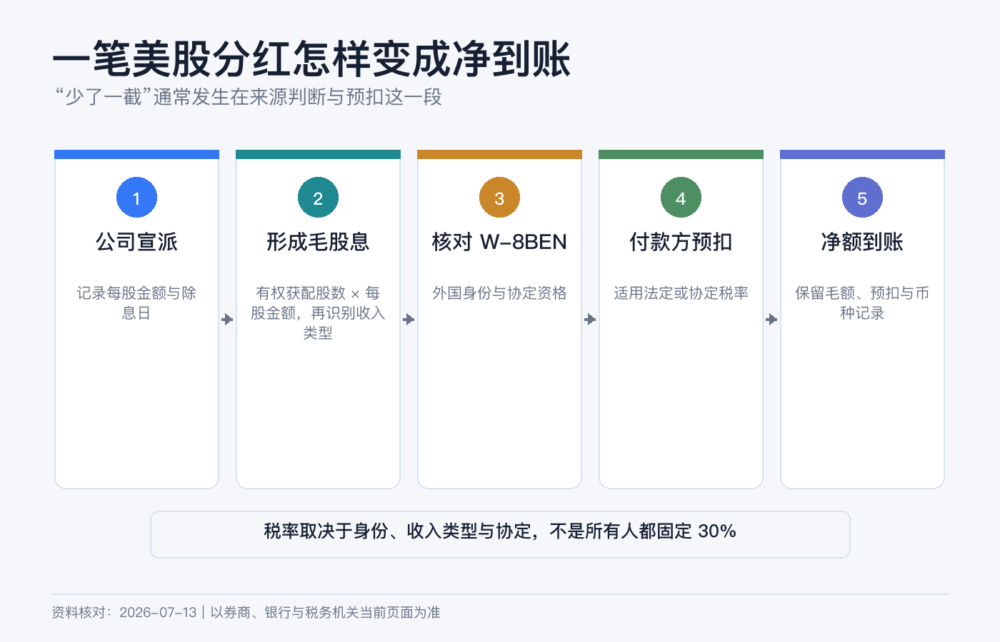
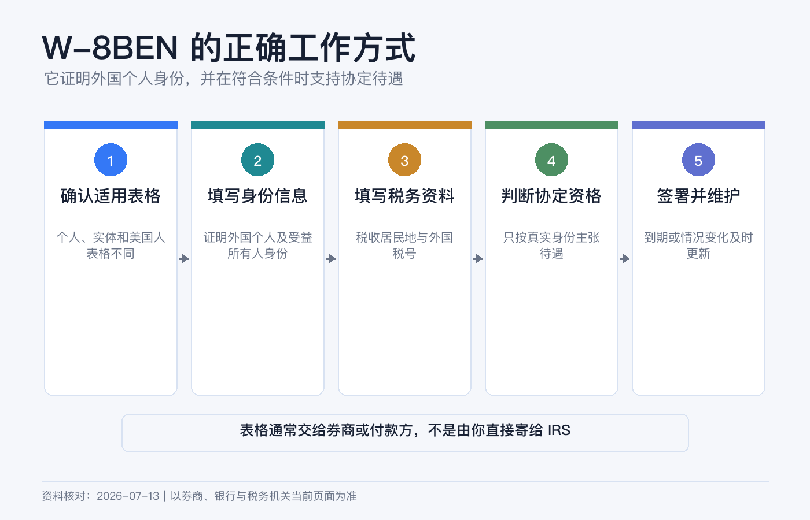
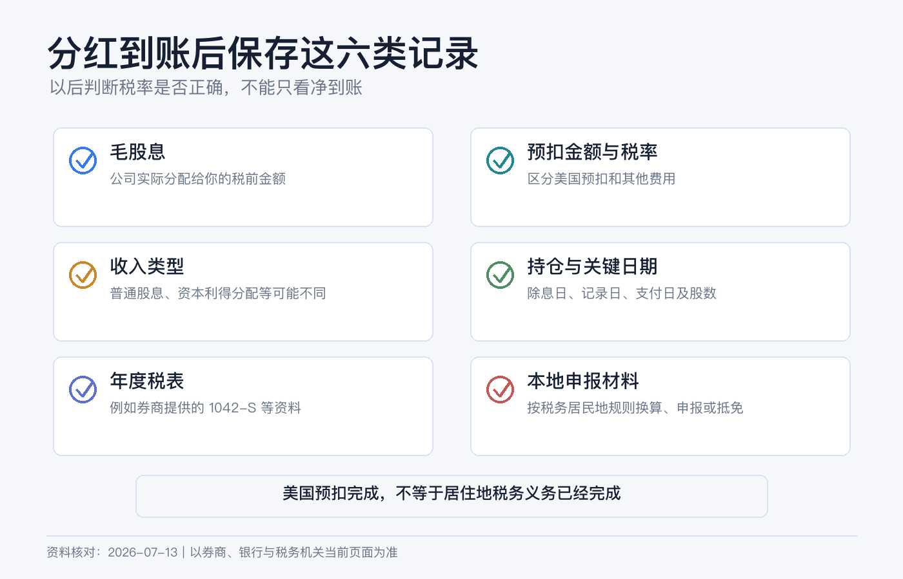

美股分红为什么少了一截：W-8BEN 与预扣税新手说明书
公司公告每股分红 1 美元，100 股理论上应收到 100 美元，账户却只增加了 70、85 或 90 美元。少掉的那一截，通常不是券商佣金，而是付款环节先扣走的美国税款。
但“美股分红一律扣 30%”也不对。正确顺序是先判断你是谁、收入从哪里来、它是什么性质、有没有适用的税收协定，最后才得到预扣率。W-8BEN 的作用，是把这些身份信息交给扣缴义务人，不是一张免税证。
本文依据 IRS、税收协定与券商官方资料整理，不是个人续签或报税经历。金额示例只说明计算方法，不证明任何人的协定资格或税率；不构成个性化税务、法律或投资建议。官方资料核对日期：2026-08-23。

查看原图（新窗口，可缩放）
先认清 8 个词
| 概念 | 新手解释 |
|---|---|
| Gross Dividend | 公司或基金宣告并分配的毛股息。 |
| Withholding Tax | 付款时由扣缴义务人先扣下并缴给税务机关的税，不等于你全球税务义务已经全部结清。 |
| Net Dividend | 毛股息减预扣税及其他适用调整后，实际进入账户的金额。 |
| W-8BEN | 外国个人用来证明非美国身份、受益所有人身份，并在符合条件时主张协定待遇的表格。 |
| Beneficial Owner | 真正享有该收入的人，不只是代持、代理或中间人。 |
| Tax Residence | 税务居民所在地；它不必然等同国籍、护照签发地或券商开户地址。 |
| Source of Income | 收入来源地。股息通常看付款公司是美国公司还是外国公司，不只看在哪个交易所上市。 |
| Form 1042-S | 扣缴义务人向非美国人报告美国来源收入与预扣税的年度资料表。 |
先用一个公式对账
净到账 = 毛股息 − 美国预扣税 − 其他适用扣款或调整
假设毛股息为 100 美元：适用 30% 时，净额通常为 70 美元；适用 15% 时约为 85 美元；适用 10% 时约为 90 美元。这里的数字只展示计算，不代表你一定适用其中任何税率。
第一层：是不是美国来源股息
IRS 的一般来源规则是：美国公司支付的股息通常是美国来源，外国公司支付的股息通常是外国来源，但外国公司存在与美国业务实质关联等例外。
因此要看发行人与分配性质，不能只看这四件事：
- 在纽约或纳斯达克交易，不自动决定所有分配都是美国来源。
- 使用美国券商，不会把所有外国股票股息变成美国来源。
- 代码以美元报价，不等于付款人是美国公司。
- ETF 的“分红”可能在年末被重新分类为普通股息、资本利得分配、利息相关分配或资本返还。
收入来源地与收入性质，是判断美国相关税收规则是否适用的两个不同条件，不能合并；也不能据此推断居住地没有申报或征税要求。
第二层：股息不等于卖股票的资本利得
对典型的非美国居民外国个人，未与美国贸易或业务实质关联的美国来源股息，法定规则通常是按毛额 30% 征税，税收协定可能降低税率。
普通股票卖出的资本利得则是另一类。IRS 说明，非居民外国个人在一个日历年内在美国停留少于 183 天时，资本利得通常不征美国税，但有重要例外，包括：与美国贸易或业务实质关联、达到相关在美天数条件、美国不动产权益、某些 REIT / QIE 分配、公开交易合伙企业或合伙权益等。
这里的资本利得 183 天规则，不等同于判断美国税务居民身份的 substantial presence test（实质居留测试）。应先确定税务身份，再判断收入适用规则，不能用“今年不到 183 天”直接推导自己是非居民或所有交易免税。IRS：FDAP 与资本利得的天数规则
所以，W-8BEN 可能让券商正确处理普通经纪交易，不代表所有产品的卖出所得都免税。尤其是名称里带 Partnership、LP、MLP、REIT 或地产结构的产品，下单前要单独查税务规则。
第三层：30% 是默认法定率，不是人人固定税率
IRS 对非居民外国人的美国来源 FDAP 收入，通常适用 30% 毛额税率，或者适用税收协定规定的更低税率。能否用协定，关键是税收协定意义上的居民身份与资格，不是“拿哪本护照”。
举例说，中美所得税协定第 9 条规定，若收款人是中国税收居民、为股息受益所有人并满足协定条件，美国对相关股息征税一般不超过毛额的 10%。这不是“中国公民自动 10%”：居住在第三地、双重居民、代持、身份资料不一致或不符合协定的人，结论可能不同。
上述 10% 是协定对符合条件股息的来源国税率上限，不是全球合计税负上限；与美国常设机构或固定基地实质关联等情形还有例外。中美所得税协定第 9 条
香港、澳门和台湾不适用中美这份所得税协定。香港税务居民不能仅因为“中国”字样就勾选中国协定待遇；在没有其他适用协定或法定例外时，美国来源普通股息通常回到 30% 规则。IRS：中美协定的适用地区说明

查看原图（新窗口，可缩放）
W-8BEN 到底交给谁
IRS 的指示非常明确：不要把 W-8BEN 寄给 IRS。应把它交给要求表格的扣缴义务人或付款方，通常就是券商、托管人或其他掌控付款的人。IBKR 也说明，客户提交的 W-8 表格由其留档，并不直接递交 IRS。
外国个人通常使用 W-8BEN；外国实体通常使用 W-8BEN-E；美国公民、绿卡持有人和其他美国税务居民通常使用 W-9。把表格选错，比漏填一格更严重。
填写时重点核对：
1. 姓名与账户法定姓名一致。 2. 国籍与永久居住地址如实填写。 3. 税务居民国家和外国税号真实、可证明。 4. 只有确实符合协定时才填写协定国家与条款，不照抄网友模板。 5. 出生日期、邮寄地址和账户资料保持一致。 6. 签字代表你在伪证处罚约束下确认资料正确。
W-8BEN 一般从签署日起有效至第三个后续日历年的 12 月 31 日。例如 2026 年签署，通常有效至 2029 年 12 月 31 日；符合特定条件时，也可能持续有效直至情况变化，不能把一般期限理解成没有例外。
如果情况变化使已提交的信息不再正确，IRS 要求在变化后 30 天内通知扣缴义务人、付款方或开户金融机构，并提交新的 W-8BEN 或其他适用表格。并非任何搬家都自动触发同一种结果；但迁往美国，或主张协定待遇后迁出相应协定国家，尤其需要重新核对。券商提醒是办理入口，不能替代 IRS 的有效期和情况变化规则。IRS：有效期与情况变化
在 IBKR 更新 W-8 的路径
当前 Client Portal 指南给出的入口是：
右上角用户菜单 → Settings → Account Profile → Profile → 对账户实体点铅笔图标 → Tax Forms
进入后按顺序完成资料更新、税表填写、信息复核和确认。若没有使用 Secure Login System，页面可能通过邮件发送确认码。IBKR：更新税表指南
如果自己的菜单、表格签发主体或税务文件入口与示例不同，应先按IBKR 账户实体与监管地区的确认方法核对签约实体和正式结单，而不是只按 App 名称判断。
提交后做三件事：保存完成页面，记录提交日期，检查税务居民国家和永久地址。不要等到收到第一笔股息才发现表格过期；IBKR 通常会发续期邮件，但维护身份资料最终仍是账户持有人的责任。
分红到账后怎么核对
先打开 Activity Statement，找到 Dividends 与 Withholding Tax 两部分，按证券和支付日配对：
1. 记录代码、ISIN、支付日、毛股息和币种。 2. 找到同日或相关日期的预扣税金额。 3. 用同币种、同笔收入的 预扣税绝对金额 ÷ 毛股息 计算该笔有效预扣比例；有冲回或补扣时先合并相关记录。这个比例不是个人最终应纳税率。 4. 核对该证券的发行地、分配性质和你的 W-8 状态。 5. 对应年度文件生成后，进入 Performance & Reports → Tax Documents；另一入口是 Menu → Reporting → Tax Documents。选对账户与 Tax Year，再下载已提供的税表和 Dividend Report；关闭账户的文件需检查 Include Closed Accounts。IBKR：年度税表入口
不要把“非美国客户”理解成每个账户每年必然有 1042-S。是否提供取决于当年的收入、适用报告规则及账户情况；IBKR 的身份文件说明也使用“可能收到”的表述。该表可报告美国来源利息、股息及 payment in lieu 等收入和相关预扣，不能仅凭没有扣税就认定没有报告义务。IBKR：身份文件与税表 IRS：1042-S 报告范围
发行人可能在年末重新分类分配，券商也可能出 corrected form。保留更正版并核对差异，不要将原版和更正版收入相加，或只凭某一天的现金流水完成年度申报。IBKR：年度税表说明
若问题已经从“W-8 是否有效”进入“某笔股息总额、预扣税和净额为什么对不上”，可继续使用IBKR 股息与预扣税记录的逐项对账方法。

查看原图（新窗口，可缩放）
税率看起来不对时，按这个顺序排查
1. W-8BEN 在支付日是否有效，而不是只看除息日。 2. 税务居民国家、地址和外国税号是否一致。 3. 你是否真的符合所主张协定，而不只是拥有该国国籍。 4. 这笔钱是普通股息、payment in lieu、REIT / QIE 分配、PTP 分配，还是资本返还。 5. 实际付款人是否为美国公司，产品是否有特殊税务结构。 6. 1042-S 的收入代码、毛额和预扣额是否与报表匹配。
仍有差异时，向 IBKR 工单提供账户号、证券代码或 ISIN、支付日、毛额、预扣额、W-8 提交日期和你认为适用的依据。若扣缴义务人不能更正，IRS 说明某些情况下需要提交 Form 1040-NR 申请退款或补税；这一步适合交给专业人士处理。
美国扣完税，不等于居住地不用申报
跨境投资至少有两层税务：美国作为收入来源地的预扣，以及你作为某地税务居民的申报和最终纳税。W-8BEN 只处理前一层的身份与预扣，不替代后一层。
以中国内地为例，若你依法属于中国居民个人，应按适用规则判断境外所得申报和纳税义务。财政部、税务总局 2020 年第 3 号公告规定，境外所得在取得所得的次年 3 月 1 日至 6 月 30 日内申报；境外股息等分类所得分别计算，不直接并入工资薪金的综合所得。符合条件的境外已缴所得税可在限额内抵免，但错缴、依协定不应征收以及已实际返还等税额不包括在内。公告第 2、4、7 条
1042-S、券商报表和银行记录值得保存，但不能笼统承诺“有 1042-S 就能抵免”。公告第 10 条对纳税凭证及无法提供时的替代材料组合另有要求；应向主管税务机关核对自己材料是否符合要求，再办理抵免。公告第 10 条
这仍不是对所有“中国籍投资者”的统一结论：是否为居民个人、所得来源如何认定、协定居民冲突、抵免限额和申报口径都要看个人事实。香港、新加坡、加拿大或其他地区的税务居民，应按当地规则判断是否申报、能否抵免，不能拿 IBKR 已扣税当作当地完税证明的全部答案。
建议按年度归档实际取得的 W-8、Activity Statement、1042-S 和完税凭证，便于后续核对；不是每年、每个账户都会产生全部文件。
参考资料
- IRS, Instructions for Form W-8BEN.
- IRS, About Form W-8BEN.
- IRS, Publication 519: U.S. Tax Guide for Aliens.
- IRS, Publication 515: Withholding of Tax on Nonresident Aliens and Foreign Entities.
- IRS, Tax Treaty Tables.
- IRS, U.S.–China Income Tax Convention.
- Interactive Brokers, Tax Information and Reporting for Non-US Persons.
- IBKR Client Portal Guide, Update Tax Forms.
- IBKR Client Portal Guide, Tax Forms.
- 国家税务总局，中华人民共和国个人所得税法。
- 财政部、国家税务总局，关于境外所得有关个人所得税政策的公告（2020 年第 3 号）。